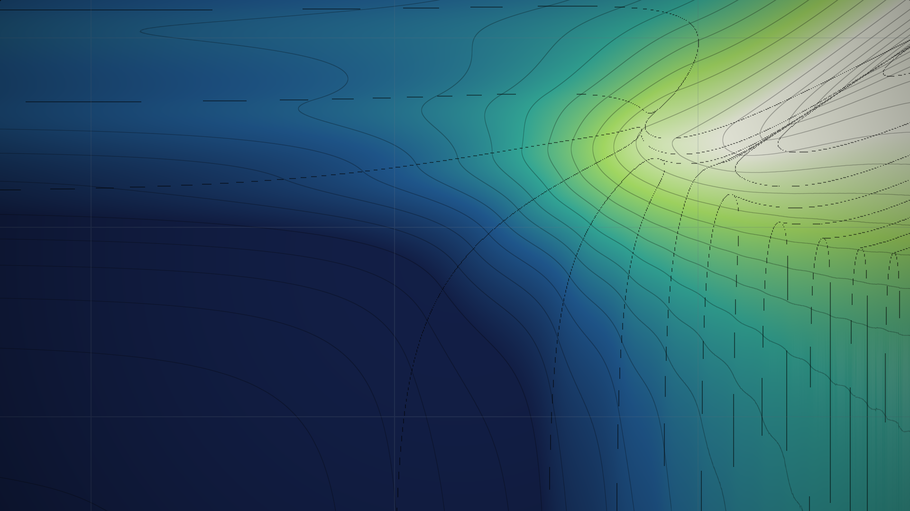

PID: The Balance of ThingsClosing the loop on the pendulum simulations with proportional-integral-derivative control, from a single tuned gain to a live map of every tuning at once.In the last few articles, we learned how to simulate a physical system using Lagrangian mechanics and integration methods including Euler's method and RK4. But simulation is only half of the problem. What if we want to actually control that system?
Imagine balancing a pendulum upright. If the pendulum begins to fall to the right, we need to move the base to the right to catch it. If it begins falling to the left, we need to move the base to the left. Unfortunately, movement is not just a "left or right" binary; we have to figure out exactly how quickly to move it.
This idea is known as control theory. One of the simplest and most widely used solutions for the single pendulum is PID control.
PID stands for Proportional–Integral–Derivative. The basic idea is to measure how far we are from where we want to be, and use that error to decide what the system should do next. Let's start with a simple example and build up from there.
Proportional ControlSuppose we want a motor to move an object linearly from the position $x$ to some desired position $x_d$. We can define the error as
$$e(t)=x_d(t)-x(t).$$
If the object is too far to the left, $e(t)$ is positive. If it is too far to the right, $e(t)$ is negative.
The most obvious thing we could do is make our control input proportional to this error:
$$u(t)=K_pe(t).$$
Here, $u$ is the force, motor command, or other control input we apply to the system, and $K_p$ is a constant that determines how aggressively we respond to the error.
For example, if we've set $K_p=10$ and the error is $e=0.2$ then our controller produces
$$u=10(0.2)=2.$$
This is proportional control. While sufficient for some systems, proportional control has a couple of problems.
Imagine you are flying a drone weighing one kilogram, and you want it to reach a certain height. Since your drone is only a meter below its desired height, your proportional algorithm using $K_p=9$ calculates that it should generate
$$K_p\cdot e(t)=9\cdot1m=9N$$
of vertical thrust. Unfortunately, gravity is pulling on your drone with a downforce of $F=ma=1\cdot g=9.81N$. The resulting acceleration is thus
$$a=9N-9.81N=\boxed{-0.81N}.$$
The drone's height as a function of time would look something like the graph below.
While your drone would need to move upward to approach its goal height, your algorithm's instructions cause it to accelerate downward and away from its target height. This issue is known as a steady-state error. The solution is to find a way to account for errors that have accumulated over time.
Integral ControlInstead of only looking at the error right now, we can keep track of the error over the entire history of the system.
The accumulated error is represented by an integral:
$$\int_0^t e(\tau)\,d\tau.$$
We multiply this by its own constant, $K_i$, giving
$$u_I(t)=K_i\int_0^t e(\tau)\,d\tau.$$
If the system has been slightly below its target for a long time, the integral continues to grow. This means the controller gradually increases its response until the persistent error is eliminated.
This is the integral term.
You may notice that the integral doesn't care only about how large the error is. It also cares about how long the error has existed. A small error that persists for a long time can therefore produce a substantial integral response.
Derivative ControlThere is another problem.
Suppose the error is currently large, but it is rapidly getting smaller. Your drone may be soaring towards its desired height, but be soon to overshoot. If we only use proportional control, we still see a large error and therefore apply a large correction.
We can rectify this by also considering how quickly the error is changing. This is represented by the error's derivative $\frac{de}{dt}$.
We multiply this by a third constant, $K_d$:
$$u_D(t)=K_d\frac{de}{dt}.$$
The derivative acts somewhat like a prediction. If the error is changing rapidly, the controller knows that the system is moving quickly toward or away from the target and can adjust its response accordingly.
Now we simply add the three terms together. The complete PID controller is
$$\boxed{ u(t)=K_pe(t) +K_i\int_0^t e(\tau)\,d\tau +K_d\frac{de}{dt} }$$
Each term is doing something different:
$$\underbrace{K_pe}_{\text{Proportional}} + \underbrace{K_i\int e\,dt}_{\text{Integral}} + \underbrace{K_d\dot e}_{\text{Derivative}}$$
You can play around with the three coefficients to find the best balancing regime. A lot of the time, constants are determined by this trial-and-error process.
It's hard to determine exactly what the "best" regime is, though. A common yardstick is ITAE (integral of time-weighted absolute error), which changes the way error is calculated by weighting errors more if they have persisted for longer. As a result, a response that overshoots briefly is scored much more kindly than one that never quite settles (like a steady-state error). Rather than tune one controller at a time and see how it scores, we can score every combination of $K_p$ and $K_d$ at once and look at the whole landscape.
The proportional term responds to the current error, the integral term to the accumulated error, and the derivative term to the rate of change of the error. This gives us a controller that considers the present, the past, and the direction in which the system is moving (the future?!).
Implementing PID on a ComputerOf course, a computer cannot calculate a continuous integral or derivative directly. We have to approximate them using discrete time steps.
Suppose our controller runs every $\Delta t$ seconds, taking its height measurement and calculating the desired lift.
At each step, we measure the current error $e_k=x_d-x_k.$ We can approximate the integral using a running sum (very much like a Riemann sum, though we only need to add the area of the last rectangle at each iteration):
$$I_k=I_{k-1}+e_k\Delta t.$$
We approximate the derivative using a finite difference
$$D_k=\frac{e_k-e_{k-1}}{\Delta t}$$
and write our discrete PID equation:
$$\begin{aligned} u_k&=K_pe_k+K_iI_k+K_dD_k \\ &=\boxed{K_pe_k+K_i\sum_{j=0}^{k}e_j\Delta t+K_d\frac{e_k-e_{k-1}}{\Delta t}}. \end{aligned}$$
This is exactly the kind of calculation that a microcontroller can perform thousands of times per second.
In Python, a basic implementation looks like this:
class PID:
def __init__(self, kp, ki, kd):
self.kp = kp
self.ki = ki
self.kd = kd
self.integral = 0.0
self.previous_error = 0.0
def update(self, error, dt):
# Integral
self.integral += error * dt
# Derivative
derivative = (error - self.previous_error) / dt
# PID output
output = (
self.kp * error
+ self.ki * self.integral
+ self.kd * derivative
)
self.previous_error = error
return outputWe use this class in a control loop:
pid = PID(kp=10, ki=1, kd=2)
while True:
position = measure_position()
error = target_position - position
control = pid.update(error, dt)
apply_control(control)Recall that the pendulum's equation of motion we derived earlier was
$$\boxed{ \ddot\theta+\frac{g}{l}\sin\theta=0 }$$
In order to control the pendulum, however, we introduce a control input. Suppose we attach the pendulum to a cart, commonly referred to as a "carriage," which moves left and right on a rail.
The motor controls the horizontal force on the cart, and the motion of the cart indirectly controls the pendulum.
Let's first derive the equation that describes the pendulum's motion.
Let $x$ be the horizontal position of the cart and $\theta$ the angle of the pendulum measured from the upright vertical.
The position of the pendulum bob is then
$$x_p=x+l\sin\theta,\ \ y_p=-l\cos\theta.$$
The velocities are
$$\dot x_p=\dot x+l\cos\theta\dot\theta,\ \ \dot y_p=l\sin\theta\dot\theta.$$
Therefore,
$$v^2=(\dot x+l\cos\theta\dot\theta)^2+(l\sin\theta\dot\theta)^2.$$
Given the mass, velocity, and acceleration $m_c$, $v_c$, and $a_c$ of the cart, the system's kinetic energy is therefore
$$\begin{aligned} T_p&=\frac12m_p\left((\dot x+l\cos\theta\dot\theta)^2+(l\sin\theta\dot\theta)^2\right) \\ T_c&=\frac12m_cv_c^2. \end{aligned}$$
and the potential energy is
$$V_p=m_pg(-l\cos\theta) \\ V_c=0.$$
Our Lagrangian is therefore
$$L=T_p+T_c-V_p-V_c.$$
Substituting and noting that $v_c=\dot x$, the Lagrangian expands to
$$L=\frac12m_p\left(\dot x^2+2l\cos\theta\,\dot x\dot\theta+l^2\dot\theta^2\right)+\frac12m_c\dot x^2+m_pgl\cos\theta.$$
The $\theta$ equationTaking the conjugate momentum and the generalized force, and skipping the algebra,
$$\frac{\partial L}{\partial\dot\theta}=m_pl\cos\theta\,\dot x+m_pl^2\dot\theta \\ \frac{\partial L}{\partial\theta}=-m_pl\sin\theta\,\dot x\dot\theta-m_pgl\sin\theta.$$
Differentiating the first with respect to time,
$$\frac{d}{dt}\frac{\partial L}{\partial\dot\theta}=m_pl\cos\theta\,\ddot x-m_pl\sin\theta\,\dot x\dot\theta+m_pl^2\ddot\theta.$$
The Euler-Lagrange equation is
$$\frac{d}{dt}\frac{\partial L}{\partial\dot\theta}-\frac{\partial L}{\partial\theta}=0,$$
and the $-m_pl\sin\theta\,\dot x\dot\theta$ terms cancel between the two expressions, leaving
$$m_pl^2\ddot\theta+m_pl\cos\theta\,\ddot x+m_pgl\sin\theta=0.$$
Dividing through by $m_pl$ and solving for the tangential acceleration $a_\theta=l\ddot\theta$,
$$a_\theta=-g\sin\theta-\ddot x\cos\theta.$$
This is the acceleration of the bob along $\hat e_\theta$ as measured in the cart's frame. The rod tension is purely radial and so never appears, and the cart enters only through $\ddot x$, acting as a driving term weighted by $\cos\theta$.
The $x$ equationSince $x$ is cyclic apart from any applied force $F$ on the cart,
$$\frac{\partial L}{\partial\dot x}=(m_c+m_p)\dot x+m_pl\cos\theta\,\dot\theta,$$
which is the total horizontal momentum. Setting its time derivative equal to $F$,
$$(m_c+m_p)\ddot x+m_pl\cos\theta\,\ddot\theta-m_pl\sin\theta\,\dot\theta^2=F.$$
Together with the $\theta$ equation this closes the system. With $F=0$ the horizontal momentum is conserved, as expected.
We can apply our PID equation using $e(t)=\theta_d-\theta$, where $\theta_d$ is the desired (upright) orientation for $\theta$. Since we are measuring from the downwards vertical, $\theta_d=\pi$. Using our PID equation,
$$\boxed{ u(t)=K_pe(t) +K_i\int_0^t e(\tau)\,d\tau +K_d\frac{de}{dt} }$$
we see that... the pendulum balances!
The pendulum is actually quite sensitive. If you wish to try it out for yourself, switch to the "manual" option in the graph above.